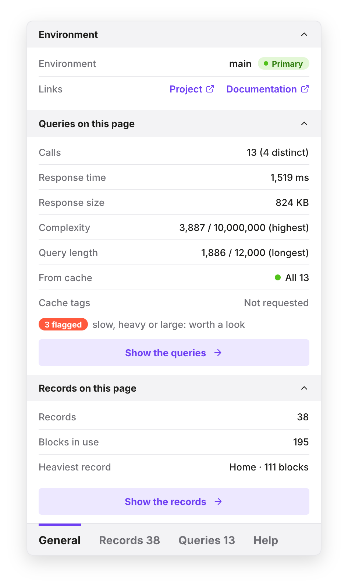
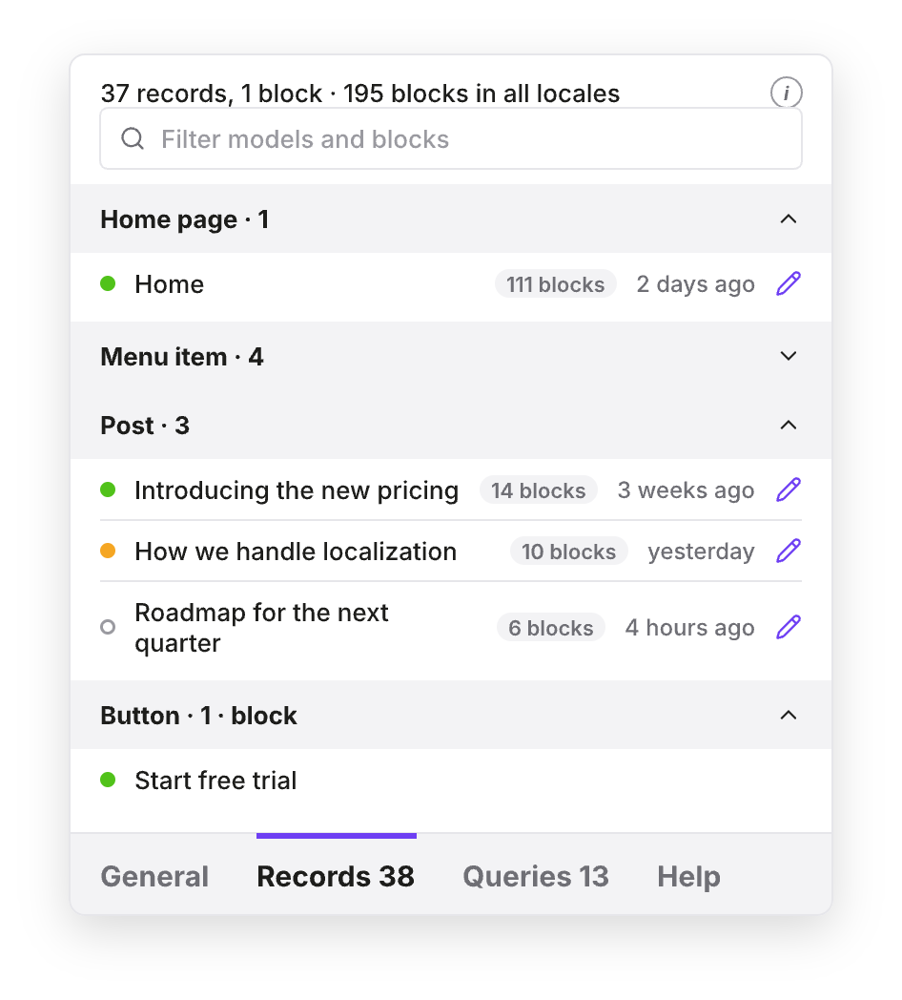
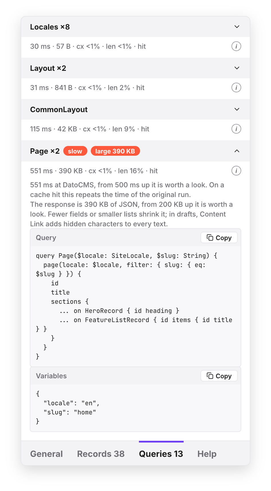

A dev bar for DatoCMS sites. It loads into your development server, watches the queries it sends to DatoCMS, applies your switches to them and shows what came back: environment, timings, cache, records and blocks. Nothing of it reaches your build.
$ npm install -D @spleenteo/datocms-dev-bar
"dev": "NODE_OPTIONS=--import=@spleenteo/datocms-dev-bar/register next dev"
Works with next dev, astro dev, nuxt dev, vite dev: any dev server on Node.

The bar holds what you click; the X-Ray panel above it holds what you read.
One click, or Alt+Shift+D, and the page reloads with the other version of the content. Your server reads two cookies; the bar never talks to DatoCMS.
Content Link overlays when you edit, off when you work on the design and the hidden stega characters get in the way.
Environment, response time and size, complexity, CDN cache, cache tags, every query with its text, and the records and blocks the page holds.
npm install -D @spleenteo/datocms-dev-bar
"dev": "NODE_OPTIONS=--import=@spleenteo/datocms-dev-bar/register next dev"
DATOCMS_DEV_BAR_CDA_TOKEN=… DATOCMS_BASE_EDITING_URL=https://<project>.admin.datocms.com DATOCMS_DEVTOOLS_TOKEN=… (optional, for Records)
No import in your application, no component in your layout. On each request the preload applies the bar's cookies to the calls your server makes to graphql.datocms.com, swaps in the token with draft access, keeps a report of every call, and appends the bar to the HTML. On Next.js it also drives the framework's draft mode.
Four tabs, in the look of the DatoCMS interface. General sums it up; Records and Queries go into the detail; Help explains the keys.


The preload runs only in the dev script. Nothing of the package is imported by your code, so nothing of it is in your build. A server started with NODE_ENV=production gets nothing, flag or not.
The server acts only on requests from localhost, 127.0.0.1, [::1], .local, .localhost or .test. Any other host gets the page untouched and nothing from /__datocms-dev-bar/.
The bar itself shows only on those hosts. The tokens stay on the server: the page only ever gets names, statuses, titles and links.
Three edits, no code: a job for Claude Code, Cursor or Copilot. Paste this and hand over your tokens.
Install @spleenteo/datocms-dev-bar as a dev dependency. In package.json, prefix the dev script with NODE_OPTIONS=--import=@spleenteo/datocms-dev-bar/register (on Windows use cross-env). In the local env file (.env.local or .env, never a production one) add DATOCMS_DEV_BAR_CDA_TOKEN with a Content Delivery API token that can read drafts, DATOCMS_BASE_EDITING_URL with the project's admin URL (https://<project>.admin.datocms.com) and, if I give you one, DATOCMS_DEVTOOLS_TOKEN with a read-only Content Management API token. Do not add any import of the package to the application code. Then restart the dev server and open the site on localhost: a bar with "Viewing draft / published" sits bottom left.
Not on Node (an edge runtime, Cloudflare workerd)? The package also ships server helpers for a manual integration: see the README.